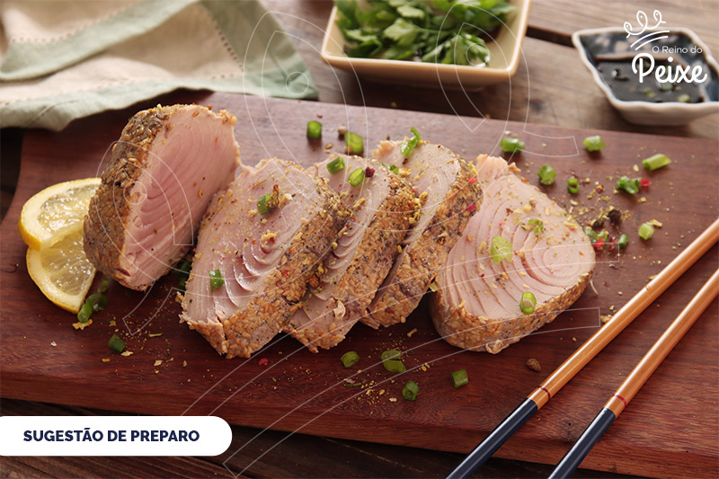

Atum Assado

- Lave e limpe bem o atum, em seguida esprema um limão sobre todo o peixe e reserve.
- Em um recipiente misture ½ xícara de azeite, uma colher de sopa de sal e a salsinha picada.
- Passe um pouco de azeite em cada posta e salpique sal, em seguida despeje a mistura de azeite, sal e salsinha sobre todo o peixe e coloque as folhas de louro. Deixe repousar por 30 minutos.
- Coloque na assadeira duas colheres de shoyu e espalhe algumas fatias de cebola, acomode as postas e cubra com o restante da cebola.
- Leve ao forno por 25 minutos (não precisa cobrir com papel alumínio).
Go back